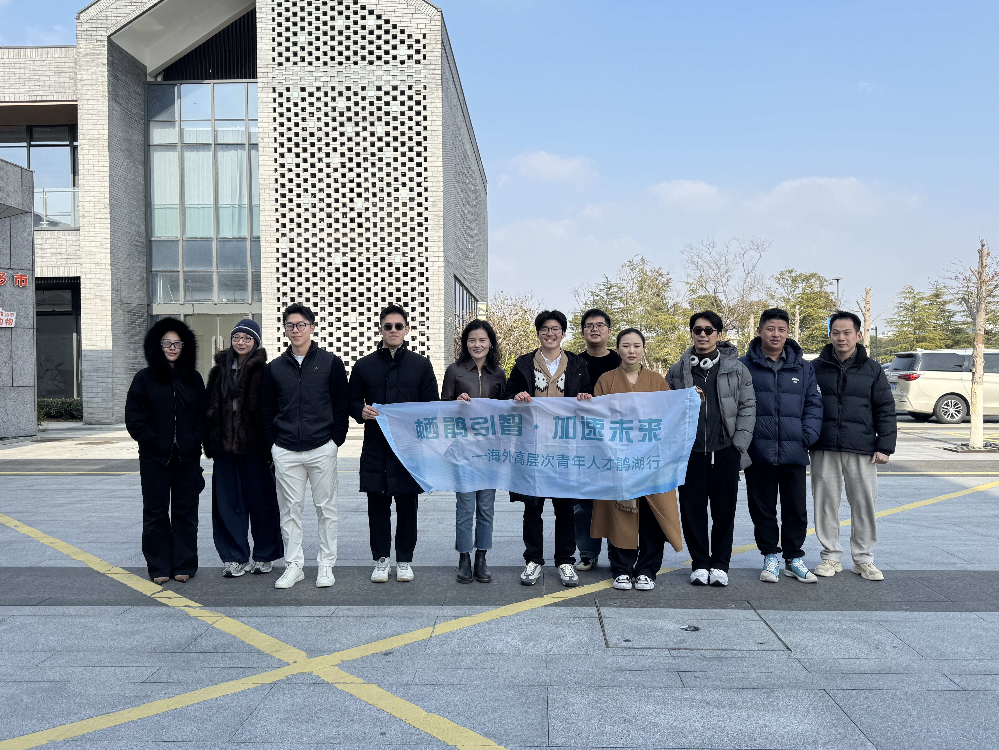
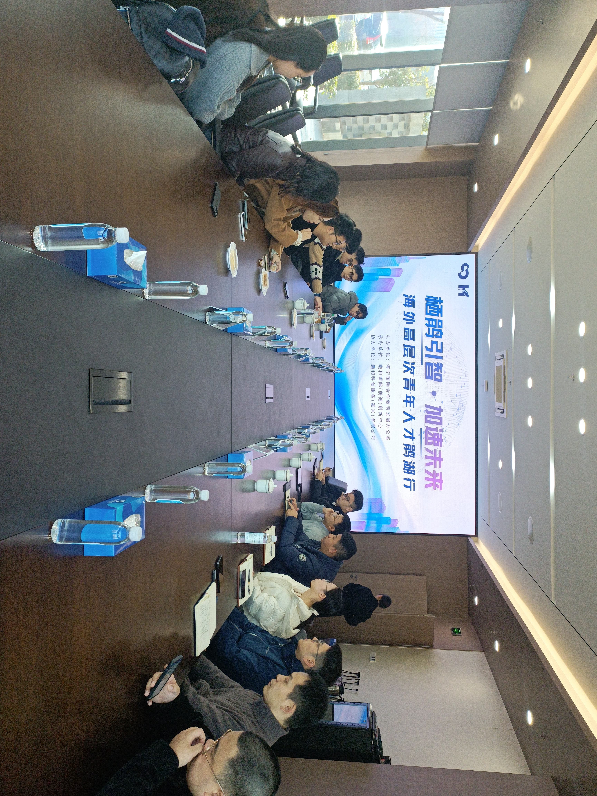
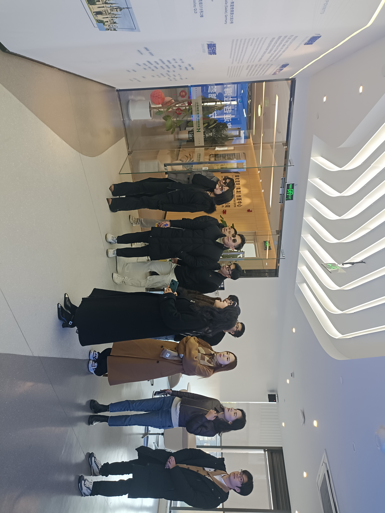

Overseas High-Level Young Talent Winter Juanhu Visit Successfully Held
Boundless Youth Forum Global Talent Exchange · Haining, Zhejiang
Event Highlights
- Brought together young researchers, entrepreneurs, and tech professionals from multiple countries and regions worldwide
- In-depth visit to Juanhu International Science City, learning the industry landscape in AI, biopharmaceuticals, advanced manufacturing, and new materials
- Systematic understanding of the innovation ecosystem built by university resources and sci-tech finance platforms
- Visited multiple local high-tech enterprises for face-to-face discussions on technical research and industry applications
- Learned about support policies for overseas young talents and feasible pathways for return development and project implementation
Event Recap
Recently, the "Overseas High-Level Young Talent Winter Juanhu Visit" organized by Boundless Youth Forum was successfully held in Haining, Zhejiang. Young researchers, entrepreneurs, and tech professionals from multiple countries and regions worldwide gathered in Juanhu to engage in in-depth discussions on return development, research commercialization, and industry collaboration.
Deep Industry Ecosystem Engagement
At Juanhu International Science City in Haining, Zhejiang, the delegation systematically learned about the region's industry layout in artificial intelligence, biopharmaceuticals, advanced manufacturing, and new materials, as well as the innovation ecosystem built through university resources and sci-tech finance platforms. Through on-site visits and exchanges, participants gained deep insights into the practical pathways for research results to translate into industrial implementation.
Enterprise Visits and Technical Exchanges
During the visit, the delegation toured multiple local high-tech enterprises and engaged in face-to-face discussions on technical research, industry applications, market expansion, and talent needs. Through direct interaction with enterprises, participants gained a deep understanding of real-world demands and opportunities in industry practice, laying a solid foundation for future research commercialization and entrepreneurial collaboration.
Policy Support and Development Pathways
In the subsequent roundtable discussions, responsible officials systematically introduced support policies for overseas young talents, helping participants gain a clearer understanding of feasible pathways for return development and project implementation. Covering multiple dimensions including talent recruitment, entrepreneurship support, financing assistance, and industry docking, participants received comprehensive and practical policy guidance.
Connecting Overseas Talent with China's Innovation Ecosystem
This "Overseas High-Level Young Talent Juanhu Visit" represents an important practice by Boundless Youth Forum in continuously promoting deep connections between overseas youth and China's innovation ecosystem. Through on-site visits, enterprise matching, and policy introductions, the event provided overseas talents with a real, open, and in-depth exchange platform, helping them better understand China's innovation ecosystem and development opportunities.
Looking Forward
In the future, Boundless Youth Forum will continue to partner with local governments, parks, and industry partners to create more open and authentic exchange scenarios, supporting overseas youth in their long-term development in research, career, and entrepreneurship. Through continuous international dialogue and ecosystem engagement, we aim to empower global young talents in their innovation and growth journey in China.
Deep connections between overseas talent and China's innovation ecosystem are creating new possibilities.
Event Photos

